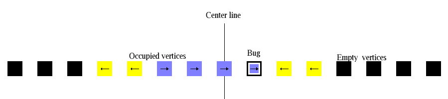

Aggregation is another process that can be modeled using rotors. Here the underlying graph has a vertex for each non-negative integer, and for each vertex n there is an edge from n to n-1 and from n to n+1. In the aggregation scenario, all vertices start out empty; once a bug hits an empty vertex, the vertex is filled and it gets a normal rotor on it. If the newly occupied vertex is on the left side of 0, the vertex immediately to its left becomes occupied as well. During each stage, a bug is added to the system at 0, and it walks until it results in either one new occupied site (on the right) or two new occupied sites (on the left). The ratio between the number of occupied sites to the left of 0 and the number of occupied sites to the right of 0 approaches the square root of 2. Models of this kind have been studied by Levine and Propp.
